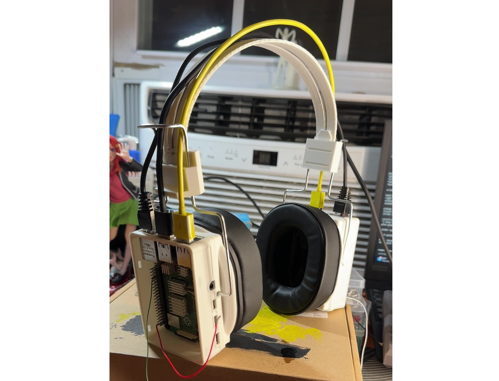
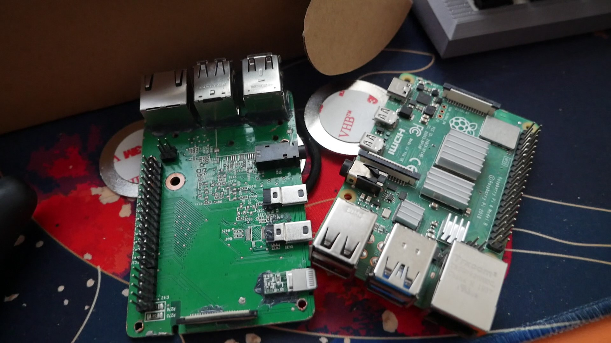
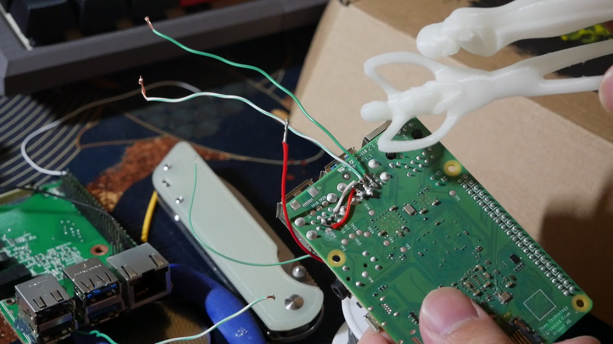
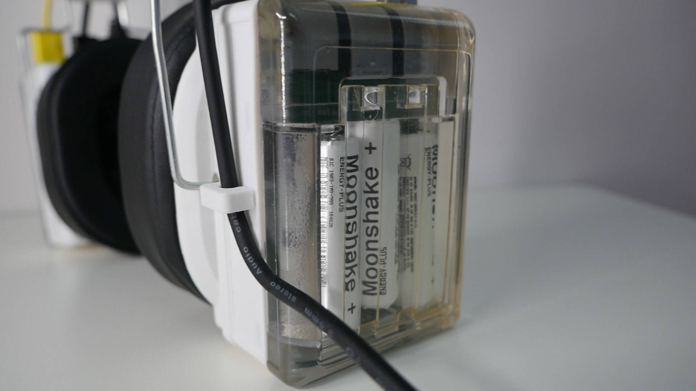
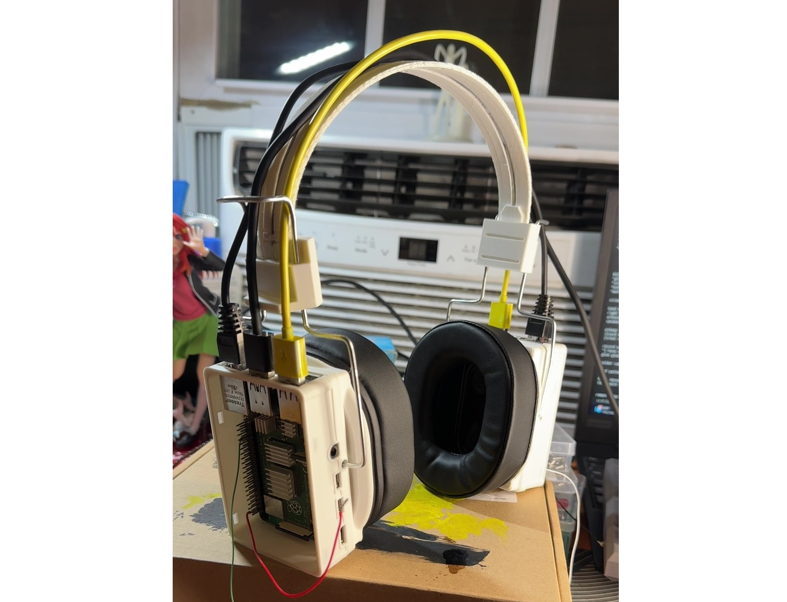
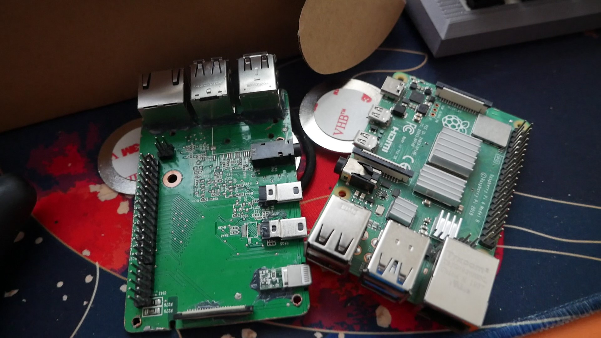
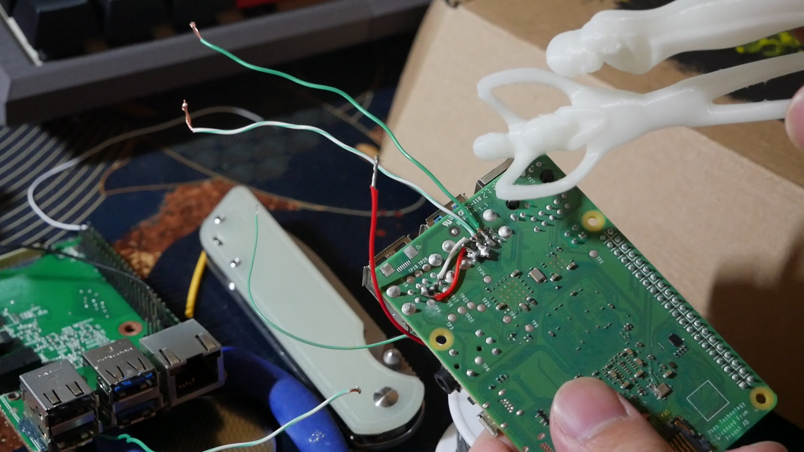
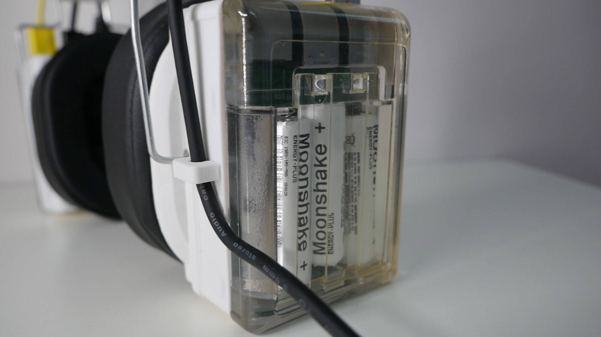

Moonshake-3D Headphones
 








> The Moonshake headphones were originally designed by Moonshake-3D as a realistic render (2nd Image). I redesigned the headphones in fusion360 to be 3D-printed with functionality in mind.
> The project was supported my Moonshake-3D and was also sponsored by JLC3DP, the 3D printing services provided by popular PCB manufacturer JLCPCB. JLC3DP provided their resin printing services to achieve the clear and glass-like quality of the battery enclosure.
> The Raspberry Pi 4's serve nearly no purpose other than aesthetics and the USB ports for signal routing. For that reason, one of the Raspberry Pi's was bought as damaged and the other Pi was a replica made from scrap PCBs and computer parts.
> To make the audio work, the headphones depend on the built in DAC of the host device, which would send the signal via a 3.5mm audio jack. The left-sided signal then goes into one USB port of the left Pi which then sends the right signal to the left Pi via the yellow USB cable.
> Directly attached to the Pi's are 8ohm rectangular speakers. The overall audio quality is poor but this is likely due to the cheap quality of the speakers.
> The batteries are also false as their profiles were 3D printed and then wrapped in paper to resemble Moonshake's designs.